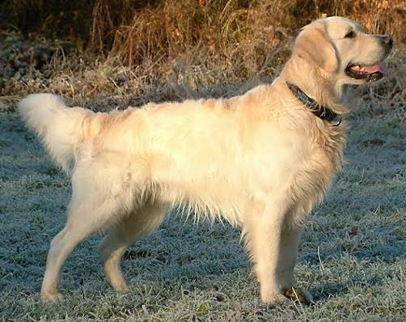

Otto
Golden Retriever
15 de marzo de 2021
Macho
28 kg
ID Huellapet: HPET-6923
Sobre Otto
Otto es un perro amigable, juguetón y muy cariñoso. Le encanta correr, jugar con la pelota y estar acompañado de personas.
Información del tutor
- Nombre
- Camila Rodríguez
- Teléfono
- +56 9 1234 5678
- Correo
- camila.rodriguez@gmail.com
- Dirección
- Av. Los Leones 1234, Providencia, Santiago, Chile
Salud
Vacunas al día
Última: 20/04/2024
Desparasitación
Última: 15/03/2024
Control veterinario
Última visita: 10/05/2024